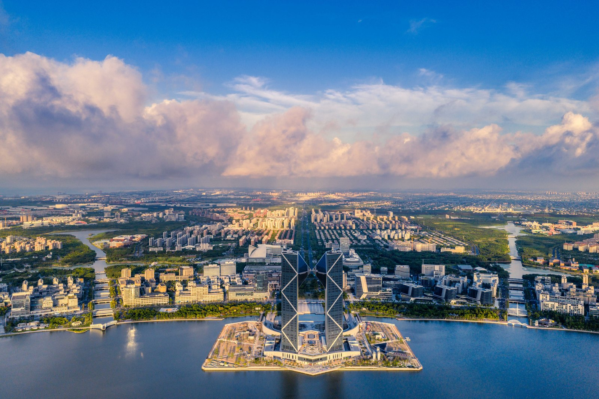
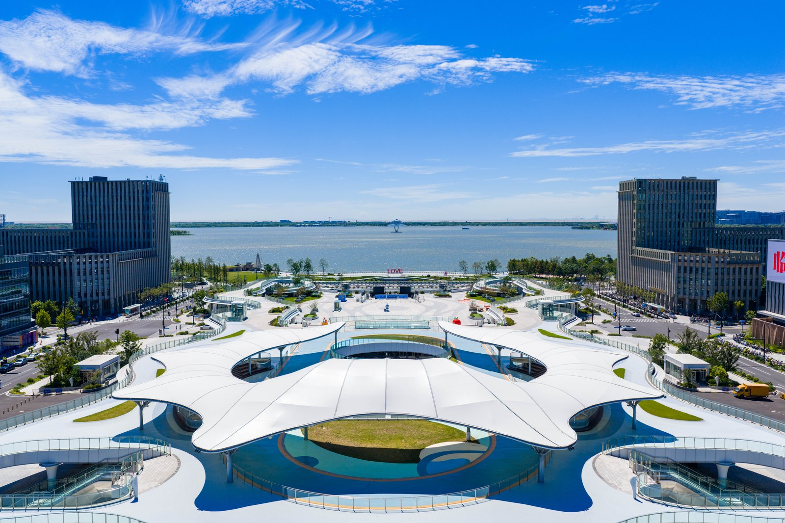
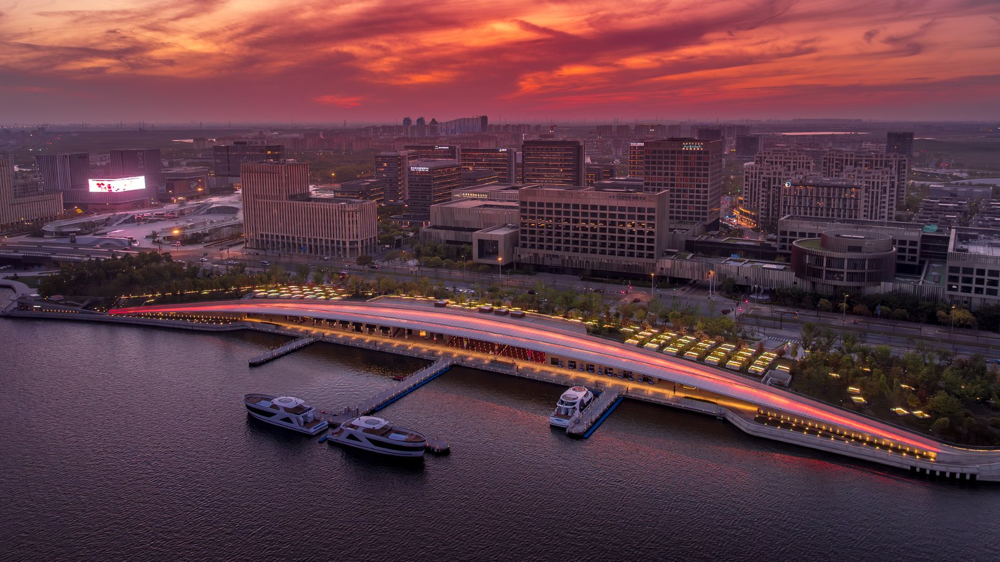

摘 要
南汇支线明年7月通车，16号线午间直达车已经加开。滴水湖还是远，但正在变近。趁秋天没走完，去环湖骑一圈。
上周六下午，我在滴水湖边站了十分钟。
风从湖面直接吹过来，没有楼挡着。芦苇黄了一半，环湖一路上的骑行队伍一拨接一拨，车铃响得比人声还密。
我上一次来还是两年前。那时出了16号线，湖边空得有点慌。这回不一样了，书店、咖啡馆、码头、球场，都有人。
滴水湖还是远，但“远”这件事，快要被改写了。

滴水湖西岸一带。图｜临港新片区管委会
1
三条路，正把滴水湖往市区拉
先说最近的一条。今年8月，市域铁路南汇支线全线结构贯通。
这条线全长34.86公里，设6座车站，设计时速160公里。从滴水湖北站出发，经星海湾路、滨海森林公园、鹏翔路，4站到浦东T3航站楼。
市政府8月的发布会说得很明确：明年7月，南汇支线建成通车。临港到浦东机场、上海东站，不用再绕一大圈。
第二条是16号线。9月28日起，工作日午间加开2班直达车，龙阳路和滴水湖12:30双向各发一班，中途不停。
别小看这两班车。以前去滴水湖，站站停坐下来，耐心是要耗掉一点的。直达车把这段时间切掉一截，来回都轻松。
第三条是S2沪芦高速拓宽，力争年内开工。开车的朋友，以后走这条路的体验会好一些。
还有两件跟日常有关的事：华东师大、同济的临港校区在推进，浦东医院临港院区年内建成。这个月初，世界顶尖科学家论坛也刚在滴水湖边办完。
路、学校、医院，这三样凑齐，一个地方才算真的“能住”。
临港不缺风景。
缺的是一条让人愿意常来的路。
2
现在出发，怎么走最省事
地铁还是最稳的选择。2号线到龙阳路，换16号线，一路到底就是滴水湖。
普通车大概一小时，直达车快一些，中途不停。要注意直达车班次有限，出门前在上海地铁App上确认一下时刻，别到了站台才发现刚走一班。
12:30那两班，其实挺适合周末。上午在家吃完早饭，慢慢晃到龙阳路，上车眯一觉，睁眼就是湖。
自驾走S2沪芦高速，市区过去一个多小时。天气好的周末，中午以后湖边车位会紧张，早到半小时省心很多。
出了滴水湖站1号口，共享单车、景区租车都有。环湖一路一圈8公里，骑得慢一点，加上拍照，一个半小时够了。

16号线滴水湖站。图｜临港新片区管委会
3
这个季节，环湖怎么玩
滴水湖的形状很规整，一个圆。所以路线也简单：沿着环湖一路，顺时针骑。
想轻松一点，就骑环湖主圈。8公里，平地，几乎没有坡。东段最好看，从滴水湖站往东到临港大道，一边是水，一边是大片芦苇和花海。
想骑痛快，走“棒棒糖”。环湖一圈是糖身，沿海港大道往返上海海事大学那一段是糖棍，全程40公里。起点一般放在滴水湖洲际酒店，顺时针，串起朵云书院、一尺花园、壹号码头。
这条线在骑友圈里被叫作“秋日骑行天花板”。十月底最好，十一月中旬也还能赶上尾巴，银杏、水杉、芦苇都还在。
不过海边风大是真的大。逆风那几段，别硬撑，下来推两步不丢人。带件防风外套，比什么都实用。
不想骑车的，可以去上海天文馆。临港大道380号，门票30元，9:30开馆，周一闭馆。记得提前网上买票，现场大概率买不到。
带孩子的话，天文馆加一号码头就能耗掉大半天。码头有游船，湖边有草坪，跑累了随便找家店坐下。
吃饭不用愁。港城广场一圈商场，选择不少；滴水湖后街偶尔还有集市。价格比市区良心一点。
傍晚别急着走。找西岸的位置站着，等太阳落到湖对面。风会凉下来，骑车的队伍也慢下来。

滴水湖一号码头的傍晚。图｜临港新片区管委会
回程的16号线上，我旁边坐着一个刚骑完车的大哥，头盔挂在车把上，外套背后全是盐渍。
他说自己每个月来一次，从徐汇出发，来回四个小时，就为了绕湖骑一圈。
“等明年那条线通了，我可能来得更勤。”
我没接话。车窗外面黑下来了，湖已经看不见。
以前说起滴水湖，上海人的第一反应是“远”。明年7月南汇支线通车以后，这个字可能真要改一改。
你呢？通车之后，你最想从滴水湖直接去浦东机场，还是先坐一趟去上海东站？或者，只是想在湖边多待一个下午。
评论区聊聊。
如果这篇对你有用，转给那个总说滴水湖太远的朋友。